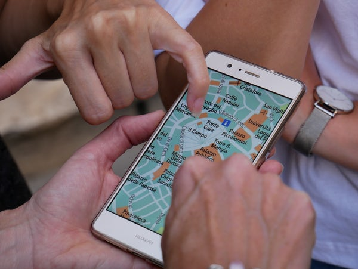

Information
This website will focus on how Google Maps can chnage their digital online maps based on your current GPS(Global Positioning System) location. This may seem insignificant, but the ripple effects this causes can be seen our conflicts and wars todays. Google decides the borders on their maps based on countries goverment policies, even if these governments are violent or democratic. Google sucks up to these governments, because if Google maps doesnt show their claims they could lose a market of billions of consumers.
In the eyes of the world Google maps has become the defacto world map.
Map Variations
Click on one of these to see different governments perspectives:
History
Its only since the dawn of the 19th century that maps have become common. In the past only wealthy countries could make maps as it took years of cartographers sketching out areas, and because of the early technology these maps were'nt very accurate. Borders would be changed on maps as a causi beli to start a conflict, it was as easy as drawing a line on a piece of paper to start a war. The advancement of the satellite technology made accurate maps widely produced, the internet made the distribution of online maps open to everyone across the globe. This caused certain countries to start censorship online. In 2010 Nicaragua invaded Costa Rica their defence against the internationial community was that on Google Maps it was marked as their terrioty.S
Google Maps Market Share
As mentioned before Google Maps is seen as the map of the world. They have a controlled market share of 67% of the world. This shows the importance of Google maps and how it effects how we see the world. Read more...
| Platform | Percentage |
|---|---|
| Google Maps | 67% |
| Waze | 12% |
| Apple Maps | 11% |
| Map Quest | 8% | Other | 2% |
Video
To help get a better understanding of this topic, Human Interests video explains in great detail about Google maps and how they change borders based on GPS location, and the importance it plays on todays society.
Go to top